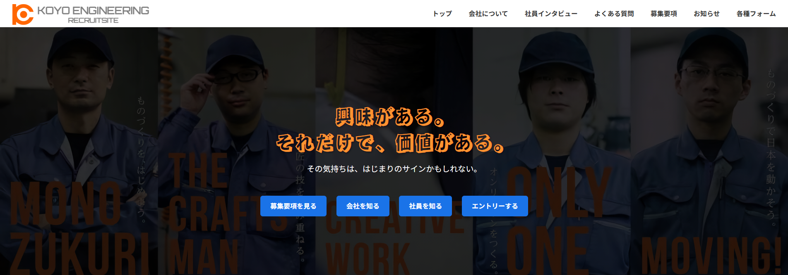

HTML / CSS / JavaScript を用いた制作実績
作品を見る
採用向けに制作したリクルートサイト（トップページ）
現職のリクルートサイトをスクラッチで制作しました。
主に若い世代をターゲットとしたリクルートサイトです。
デザイン / コーディング / レスポンシブ対応
JavaScriptを用いたインタラクションについては、まだ表現の幅が限られているため、今後強化したいです。
専門学校で2年間IT関係について学び、
社内SEとして株式会社向陽エンジニアリングに就職。
リクルートサイトの作成を経てプログラミングの楽しさに気づき、
エンジニアへの転職を決意する。